A field guide for humans
Cats Are the Best
…and yes, you can train them. A science-backed guide to understanding, teaching and living well with your cat.
Use ← → or swipe to navigate · 20 slides
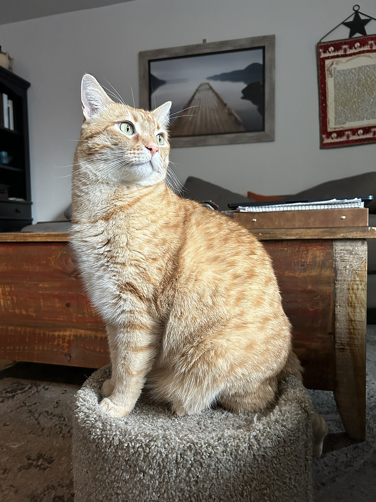
Part 1 · Meet the cat
Why cats are the best: they chose us
Cats weren't bred for a job like dogs were. Wildcats moved in on their own when farming villages started storing grain, which drew in mice.
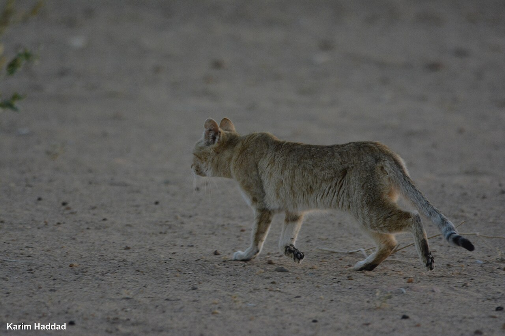
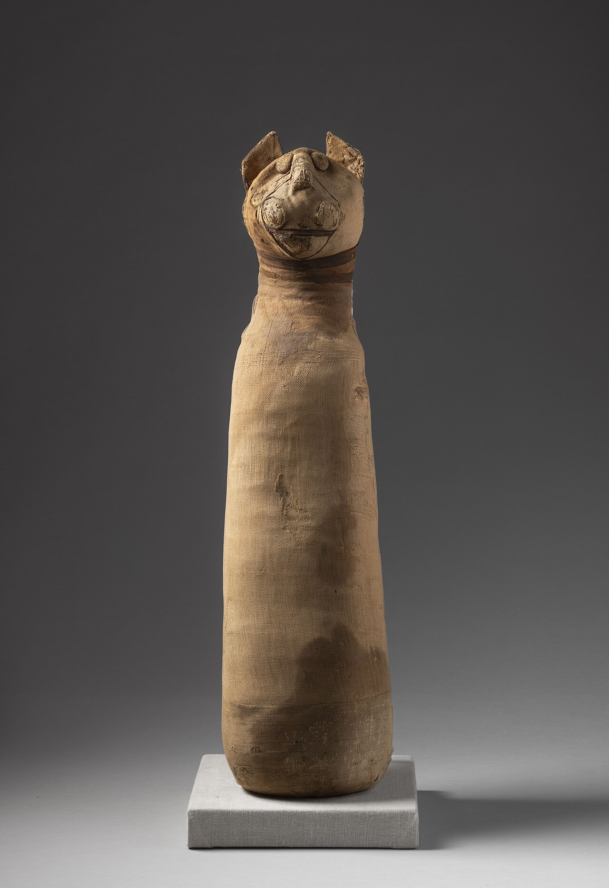
Sources: Vigne et al., Science 2004; Driscoll et al., Science 2007; National Geographic (2004).
Myth-busting
"You can't train a cat." Wrong.
"Anyone can train their cat. You don't need a special cat, or any training experience."
— Dr Sarah Ellis, International Cat Care (paraphrased)
Cats learn constantly. They already know the sound of the treat bag and the sight of the carrier. Training just means teaching on purpose.
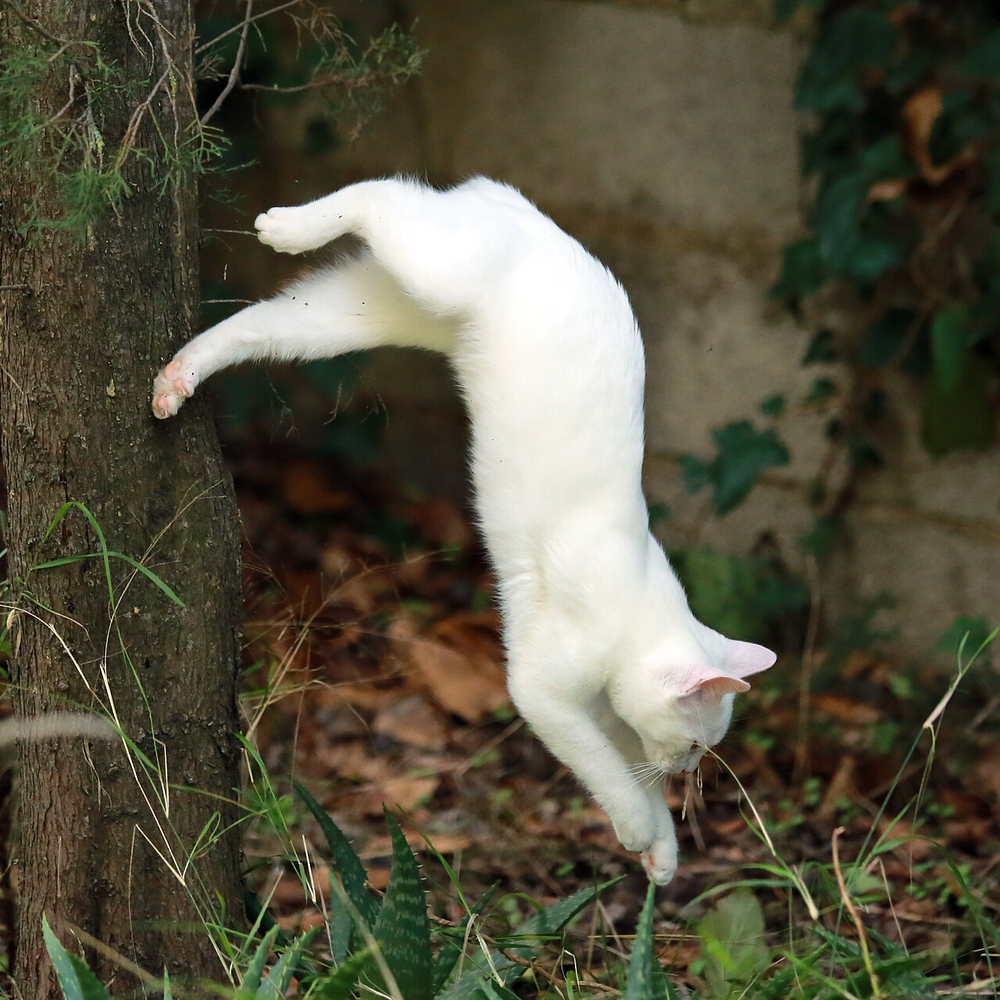
of cat owners in an iCatCare poll wanted more advice on training. Over half struggled to get their cat into a carrier.
Source: International Cat Care / BSAVA, International Cat Day 2021 (#BeCatCurious).
The science
Cats like us more than you think
In a 2017 study, pet and shelter cats chose between people, food, toys and scents. Human interaction came out on top.
Individual cats varied a lot, though. The training lesson: find out what your cat will work for. It could be a treat, a toy or a chin scratch.
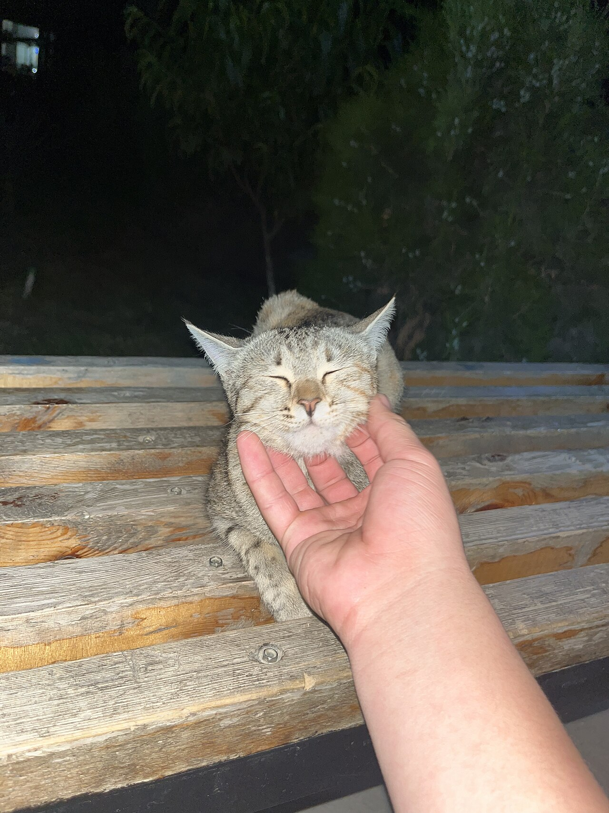
Each cat's most-preferred stimulus
n = 38 cats that showed a preference
Source: Vitale Shreve, Mehrkam & Udell (2017), "Social interaction, food, scent or toys?" Behavioural Processes 141:322–328.
The science
Yes, your cat knows its name (it just might not answer)
Researchers in Tokyo played cats a list of four similar-sounding words, then the cat's own name. Cats got bored with the words but perked up at their own name.
The researchers think cats link their name with what usually follows it, like food, play or a vet trip. Training puts that to work.
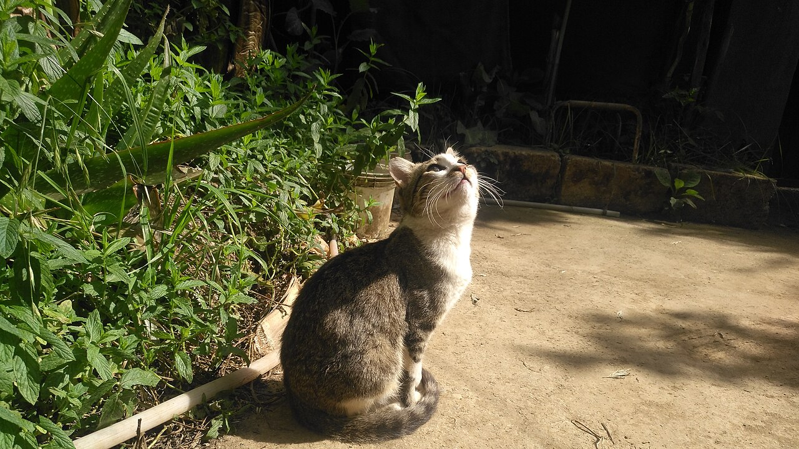
Say your cat's name before good things: meals, play, treats.
Use the name to scold or just before something unpleasant. It "poisons" the cue.
Source: Saito et al. (2019), "Domestic cats discriminate their names from other words," Scientific Reports 9:5394.
Part 2 · Training principles
How cats learn: consequences drive behavior
Behavior that gets rewarded gets repeated. Behavior that earns nothing fades away. That's the whole game.
Be precise
Reward the exact moment of the behavior you want. A late reward teaches the wrong thing.
Keep it short
Sessions of 2–5 minutes, and stop before your cat loses interest.
Small steps
Break skills into tiny pieces. If your cat struggles, make it easier.
Cat's choice
Let the cat opt in and walk away. Willing cats learn faster.
Sources: Humane Colorado; Humane Society of Southern Colorado; AAFP/ISFM Cat Friendly Interaction Guidelines (2022).
Training principles
Why punishment backfires
- The cat links the scolding to you, not the scratching.
- It learns to misbehave when you're not there.
- Fear can turn into defensive aggression and hiding.
- Punishing after the fact does nothing. The cat can't connect the two.
- Redirect to an acceptable option (a post instead of the sofa).
- Reward the right choice right away.
- Manage the environment so the wrong choice is less appealing.
- Check for a medical cause when behavior suddenly changes.
Sources: HSUS / Dumb Friends League "Destructive Scratching" handout; San Francisco SPCA; Cornell Feline Health Center.
Training principles
Read the cat before you train
| Signal | Relaxed, ready to learn | Stressed, stop and give space |
|---|---|---|
| Tail | Held upright, sometimes with a hooked tip | Puffed up, lashing, or tucked tight around the body |
| Ears | Forward and relaxed | Flattened sideways or back ("airplane ears") |
| Eyes | Soft gaze, slow blinks | Wide pupils, hard stare, or squinting with tension |
| Body | Loose, approaches you, rubs against you | Crouched low, frozen, turning away, skin twitching |
💡 Try a slow blink at your cat. Many cats slow-blink back, a sign of a relaxed, trusting cat.
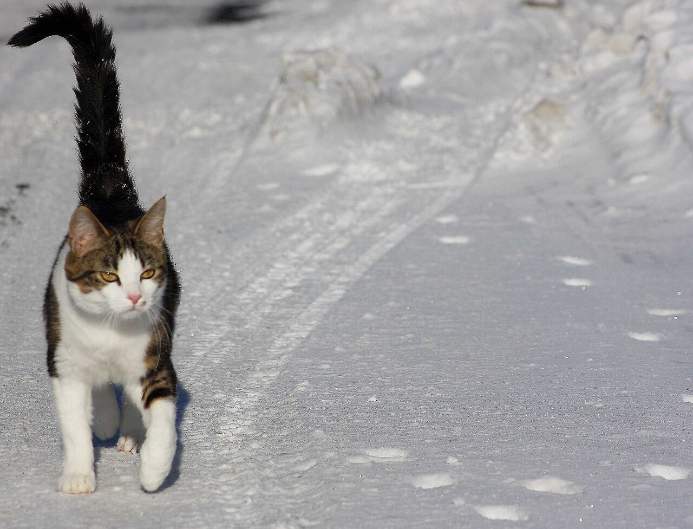
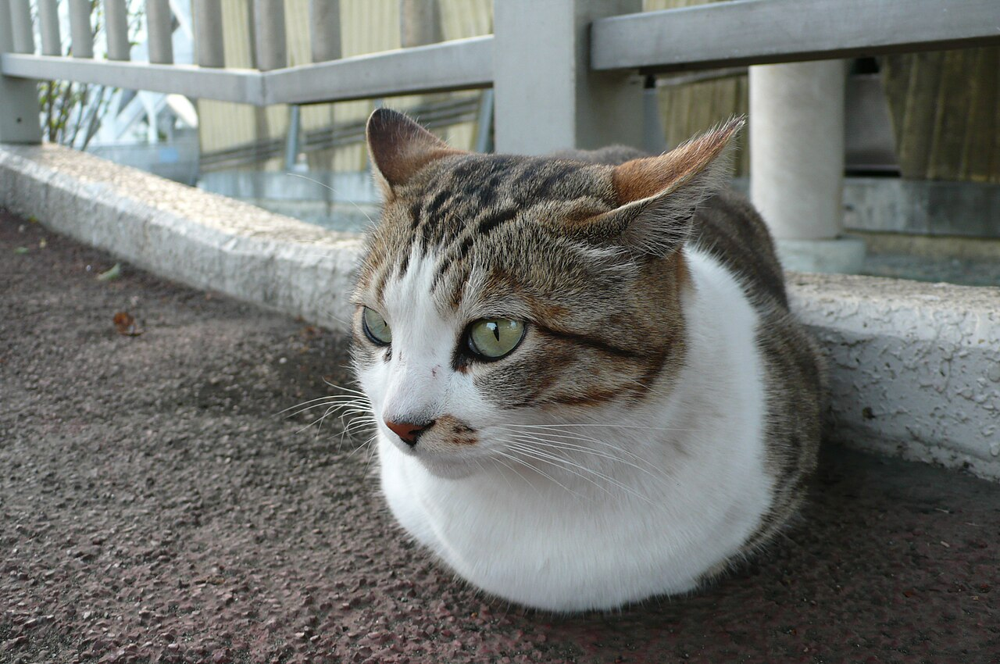
Sources: VCA Animal Hospitals, "How to read your cat's body language"; Wisconsin Humane Society.
Part 3 · Getting started
Your training toolkit
A marker
A clicker, or a short word like "yes!" said the same way every time.
High-value treats
Tiny pieces, smaller than a pea. Lickable treats or cooked chicken work well. Save them only for training.
A target stick
A chopstick, a spatula, or a pen with a ball on the end.
Good timing
Train before meals, when your cat is a little hungry, in a quiet room.
Remember to count training treats in your cat's daily food allowance.
Sources: Humane Colorado; Kinship; Toronto Humane Society; SPCA Cincinnati.
Clicker training · Step 1
Charge the clicker
The click works as a bridge. It marks the exact instant your cat got it right, which buys you a second or two to deliver the treat. Always the same sound, always followed by something good.
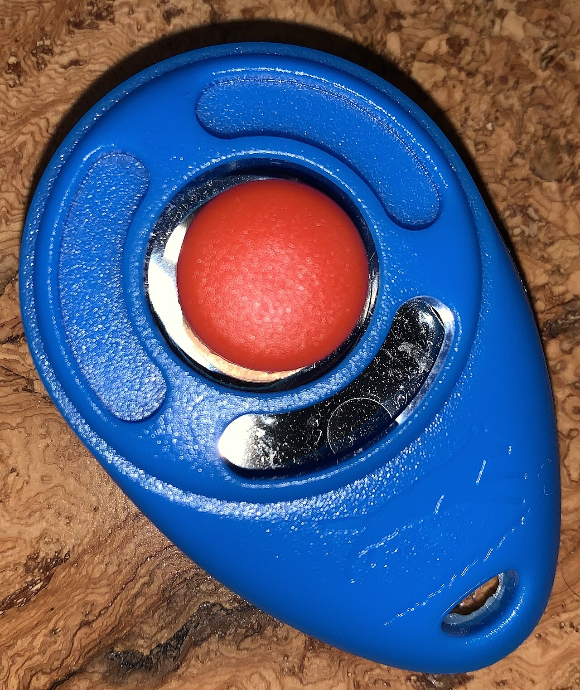
If the click startles your cat, muffle it in a pocket or use a clicky pen. Be generous early on so your cat thinks training is the best thing ever.
Sources: Humane Colorado, "Cat clicker training"; Humane Society of Southern Colorado, "Cat Clicker Training Basics."
Clicker training · Step 2
Targeting: the skill that unlocks everything
- Present the targetHold a chopstick a few cm from your cat's nose.
- Click the sniffCats are curious. The instant the nose touches it, click and treat.
- Move it aroundLeft, right, up, a little further away each time.
- Add a cueOnce it's reliable, say "touch" just before presenting it.
Why targeting matters
Once your cat follows a target, you can guide it without picking it up:
- Into the carrier
- Onto the scale or a cat bed
- Off the kitchen counter
- Through hoops, onto stools, and into tricks
Sources: Kinship, "A step-by-step guide on how to clicker train your cat"; HSSC Cat Clicker Training Basics.
Part 4 · Useful skills
Come when called
- Pick a unique cueA word or sound, like a whistle or a shaken treat pot. Don't rely on the name alone.
- Start closeSay the cue, then reward the moment your cat comes over, even from 1 metre away.
- Add distanceCall from another room, then another floor.
- Go intermittentOnce it's reliable, reward most calls, not all. The uncertainty keeps cats keen.
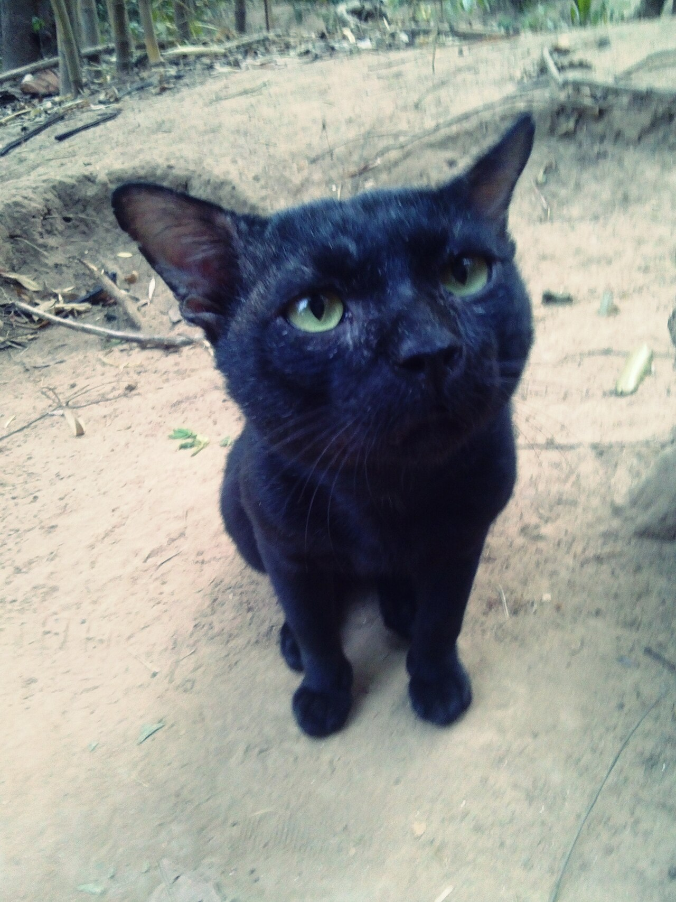
Never call your cat for something it dislikes
If "come" sometimes means a pill or the carrier, the recall falls apart. For those, go and get your cat instead.
A solid recall is a real safety tool in an emergency, like a fire, an escape or an evacuation.
Sources: Ontario SPCA, "How to teach a cat recall" (2026); Your Cat magazine; Rover.
Useful skills
Fun tricks: Sit & High-five
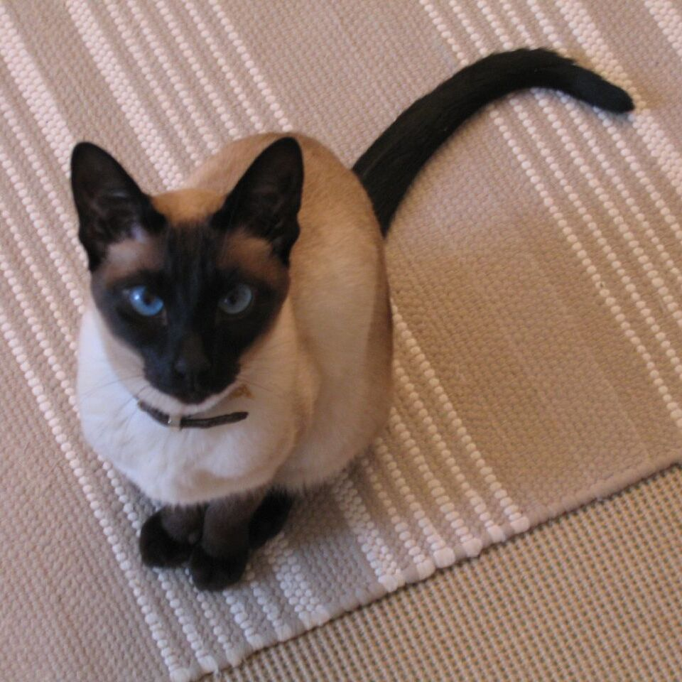
- Hold a treat just above your cat's nose.
- Move it slowly back over the head. Most cats sit naturally.
- Click the moment the bottom touches down, then treat.
- Add the word "sit" once the cat sits reliably.
- Start from a sit. Hold a treat in a closed fist just above paw height.
- Click any paw lift, even a tiny one.
- Gradually swap the fist for an open palm.
- Raise your hand bit by bit and add the cue "high five!"
Tricks aren't just party pieces. They build confidence and your bond, and give your cat mental exercise.
Sources: Cats.com, "How to clicker train a cat"; Kinship.
Part 5 · Everyday behavior
Scratching: redirect it, don't stop it
Scratching is normal and necessary. It keeps claws in shape, stretches muscles, and leaves scent marks. Your job is to tell your cat where to scratch.
- Offer several types: upright, flat and angled; sisal, cardboard and wood.
- Posts must be tall and sturdy. A wobbly post is a rejected post.
- Place them near sleeping spots, since cats scratch on waking, and next to the furniture they target.
- Reward use with treats, praise or catnip.
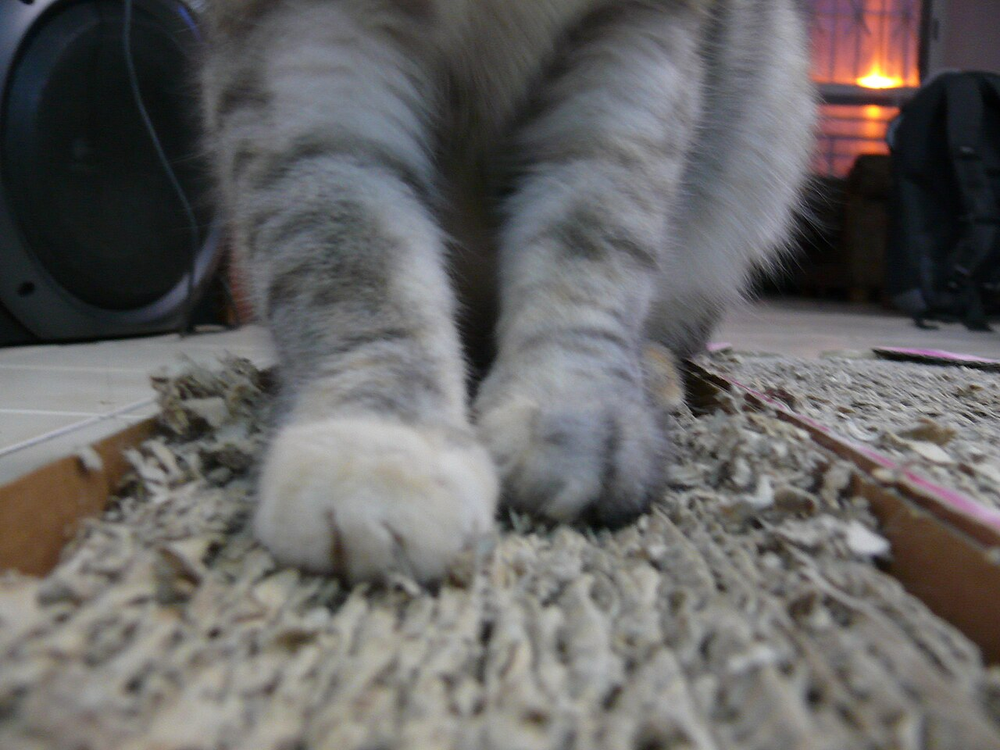
Protect the sofa
Double-sided tape, foil, or a carpet runner pointy-side-up. Keep it in place until the post has been used reliably for several weeks.
Never
Force paws onto the post, or declaw. The ASPCA opposes declawing, which is an amputation.
Sources: ASPCA, "Scratching behavior in cats"; North Shore Animal League America; HSUS "Destructive Scratching" handout.
Everyday behavior
Litter box success
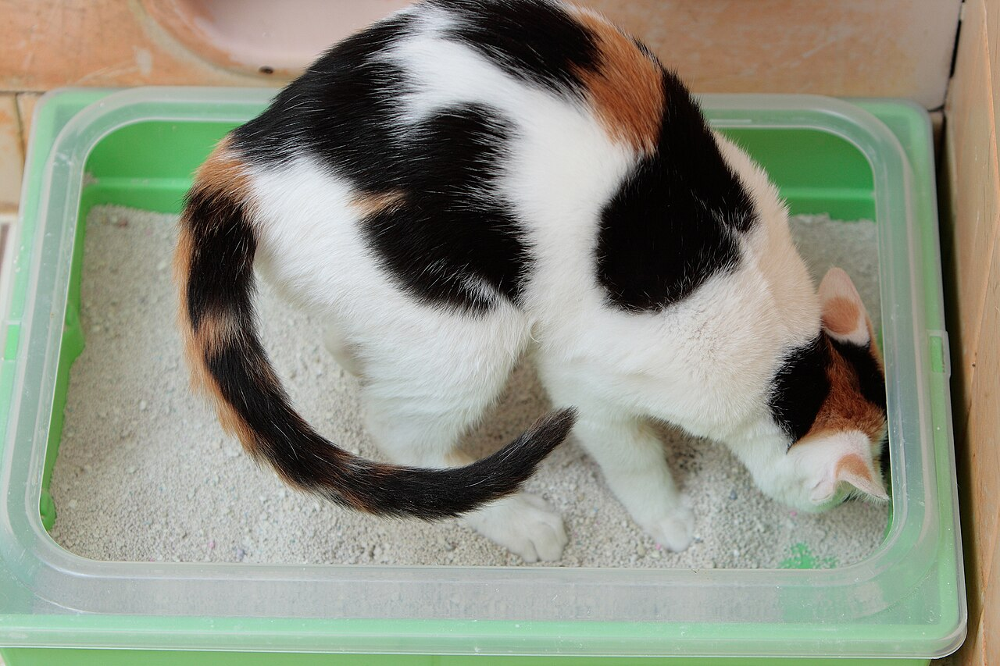
Peeing outside the box? See the vet first. Urinary problems, pain and stress are common causes. Never scold or rub a cat's nose in it, because that only adds to the stress.
📍 Location
Quiet, easy to reach, and away from food and water. Put one on every floor of the house.
📏 Size & number
Big enough to turn around in, with low sides for kittens and seniors. A common guideline is one box per cat, plus one.
🧼 Litter & cleaning
Unscented, clumping litter. Scoop daily. Clean accidents with an enzymatic cleaner so the smell doesn't draw the cat back.
Sources: North Shore Animal League America; Joyful Pets; ASPCA, "Common cat behavior issues."
Part 6 · Vet-ready cats
Carrier training: from scary box to safe den
- Make it furnitureLeave the carrier out all the time, door off, with a soft blanket that smells of home.
- Make it magicToss treats in and near it, and feed meals beside it, then inside it.
- Door practiceClose the door for one second, treat, and open it. Build up slowly.
- Lift & moveLift it a few cm, then carry it around the room, then take short car trips.
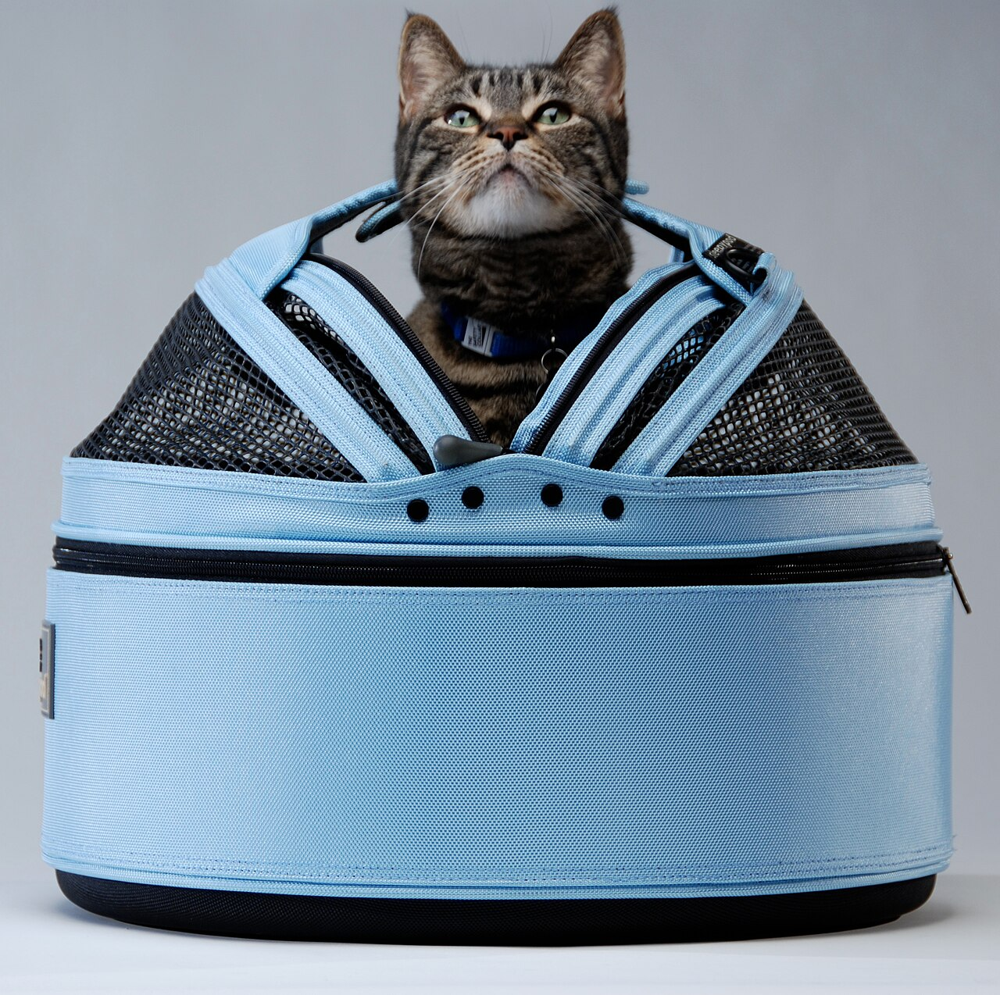
Why it matters
Cats outnumber dogs as pets but go to the vet far less often, and stressful journeys are a big reason why. A cat that walks into its carrier (try your target stick!) arrives calmer and gets a better exam.
Sources: International Cat Care carrier-training videos; AAFP/ISFM Cat Friendly Veterinary Interaction & Environment Guidelines (2022).
Vet-ready cats
Cooperative care: handling without a fight
Vets now stress giving cats choice and control. You can practise the same at home, one touch at a time.
Start with places your cat already enjoys being touched, like the head and cheeks. Pair each new touch with a treat, and stop while your cat is still relaxed.
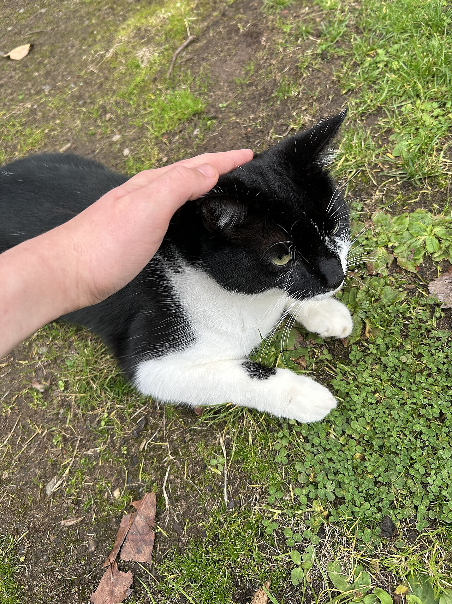
Paws
Touch a paw → treat. Gently press to show a claw → treat. Trim one nail → jackpot.
Ears
Stroke the ear base, then lift the flap briefly. Pair each step with a treat.
Mouth
Touch the cheek, then lift the lip for a second. This prepares your cat for tooth checks and brushing.
Coat
Short brushing sessions on favourite spots first (usually the cheeks and chin).
If your cat pulls away, that's information, not defiance. Go back a step. Fewer, gentler touches beat a wrestling match.
Sources: AAFP/ISFM (2022) J Feline Med Surg 24:1093–1132; International Cat Care handling video series (with Ceva).
Part 7 · Adventures
Harness & leash walking
- Sniff itLeave the harness on the floor. Treat any interest.
- Drape, then fastenStart with 30–60 seconds indoors, paired with food. Build up over days.
- Add a light leashLet it trail indoors, then follow your cat around, keeping it loose.
- Doorstep firstLet your cat look out, then go to a quiet, enclosed garden. The cat sets the pace.
😹 The "flop" is normal. Many cats freeze or fall over in a new harness. Train before meals and use treats to get them moving.
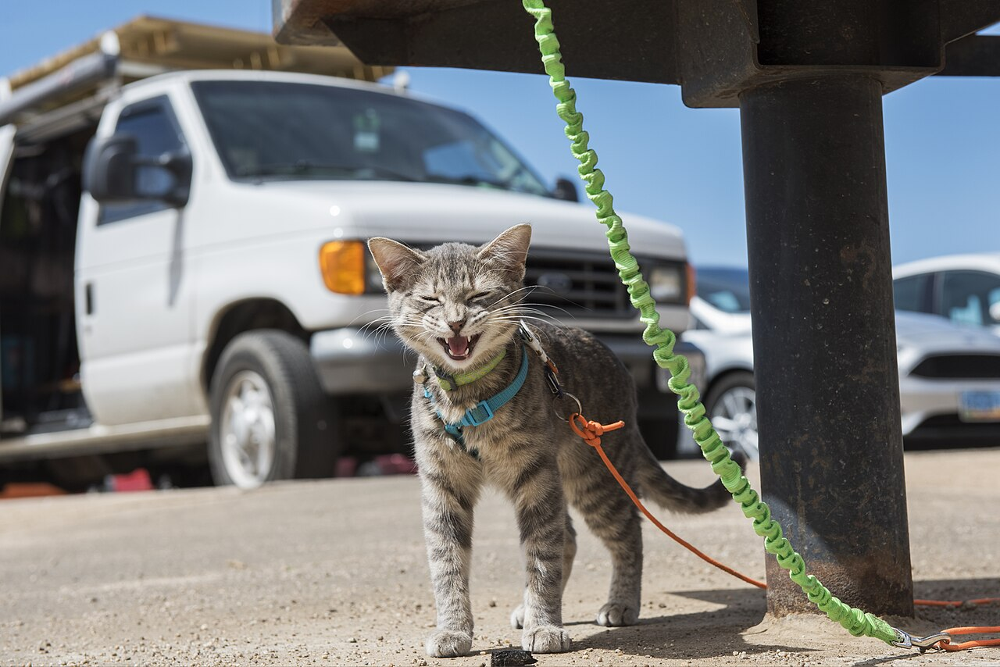
⚠️ Safety
Use an escape-proof harness, never a collar. Vaccinate, use flea and tick protection, microchip, and avoid dogs and traffic.
Sources: Toronto Humane Society, "Harness Training Your Cat"; Wisconsin Humane Society, "Leash training your cat"; Cats.com.
Part 8 · A happy cat
Enrichment: let them be a cat
Many behavior "problems" are really boredom. Cats evolved to hunt many small meals a day, not to eat out of a bowl.
- Food puzzles: treat balls, snuffle mats, egg-carton feeders.
- Hunt → catch → eat → groom → sleep: play with a wand toy, then feed a meal.
- Vertical space: shelves, cat trees, window perches.
- Rotate toys weekly so they stay new.
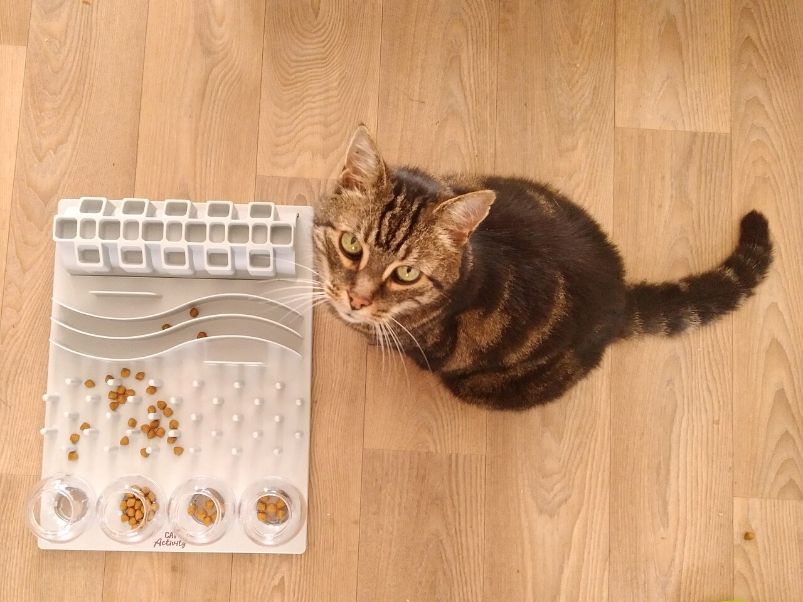
of owners in a UC Davis survey had never tried a food puzzle. Case studies link puzzles to help with weight loss, anxiety and litter box problems.
Sources: Dantas, Delgado, Johnson & Buffington (2016), J Feline Med Surg 18(9):723–732; UC Davis owner survey (2018).
Wrap-up
The golden rules of cat training
Sources & further reading (full list in resources.md)
- Vigne et al. (2004) Science 304:259. NatGeo
- Driscoll et al. (2007) Science 317:519–523.
- Vitale Shreve et al. (2017) Behav Processes 141:322–328. Phys.org
- Saito et al. (2019) Sci Rep 9:5394.
- Dantas et al. (2016) JFMS 18(9):723–732. CZAW
- AAFP/ISFM (2022) Cat Friendly Interaction Guidelines. catvets.com
- International Cat Care. icatcare.org
- ASPCA: Scratching behavior. aspca.org
- Humane Colorado: Clicker training. link
- Kinship: Clicker training guide. link
- Toronto Humane: Harness training. PDF
- Ontario SPCA: Recall. link
- VCA: Cat body language. link
- Ellis & Bradshaw (2016) The Trainable Cat.
Photo credits (Wikimedia Commons)
Red tabby on cat house: Roc0ast3r, CC0 · African wildcat: Karim Haddad, CC BY 4.0 · Cat mummy: Museo Egizio, CC0 · Agile cat: Isasza, CC BY 3.0 · Kitten being petted: Xoqoni Said, CC0 · Cat looking up: Nathan Asfaw, CC BY-SA 4.0 · Love Cats: Helgi Halldórsson, CC BY-SA 2.0 · Airplane ears: Hisashi, CC BY-SA 2.0 · Clicker: coolgurl5555, CC0 · Thai cat: Lolavies, CC BY-SA 3.0 · Siamese sitting: chexov, CC BY 2.0 · Cardboard scratcher: Arria Belli, CC BY-SA 2.0 · Calico kitten in litter box: MiNe, CC BY 2.0 · Cat in carrier: Greg Mote, CC BY 2.0 · Cat being petted: Josephguy15 2.0, CC0 · Cat on a leash: NPS / Joshua Tree NP, public domain · Remus and the slow feeder: Anja, CC BY-SA 4.0. Each photo's caption links to its Commons page and license. Images were resized; no other changes.
🐈 Cats are the best, and a trained cat is a happier, calmer, safer one.